Leviatã novo · as outras cenas
Bloco D · 18/10/2026 · gerado enquanto você estava fora, para escolher na volta. ← o capítulo 4 (instalado) · rodada 2 →
O método é o que chegou no capítulo 4 (a edição 73): a arte aprovada de hoje de cada cena é a imagem editada, e a base nova entra como referência. Ficam o ângulo, a composição e o estado; muda o desenho (casco de placas, cabeça de mandíbula, guelras, barbatanas de tubarão).
- Reentrada (capítulo 5): o conceito 5★, de onde o corpo em brasa foi recortado. 4 sementes.
- Carcaça (capítulos 6 e 7): o quadro aprovado do sobrevoo. Da edição só vale a elipse da carcaça (a mesma da instalação de 24/09). Fora dela, a colônia, as montanhas e o céu são os pixels de hoje. 4 sementes.
- Menu: o armored de hoje (vivo e forte, sem ferida). 2 sementes editadas a 1× e 2 a 2× (reduzidas de volta).
- Silhueta (F2, e também a F3): sai da escolha do menu, reduzida.
O que eu preciso de você: um candidato por cena, ou "gere de novo" na que não chegou.
Capítulo 5 · a reentrada
O corpo cai em diagonal, visto de cima e de trás, de cabeça, envolto na brasa. Depois da escolha, ele passa pelo processo de 24/09 (o recorte com a borda em brasa amansada e as 12 escalas da folha f8-reentrada-escalas), e aí vai para a cena.
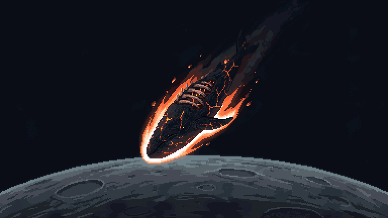
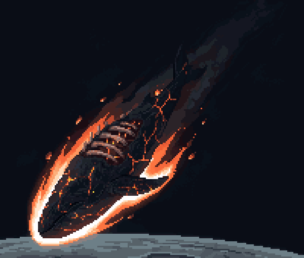
Edição 82 a minha aposta
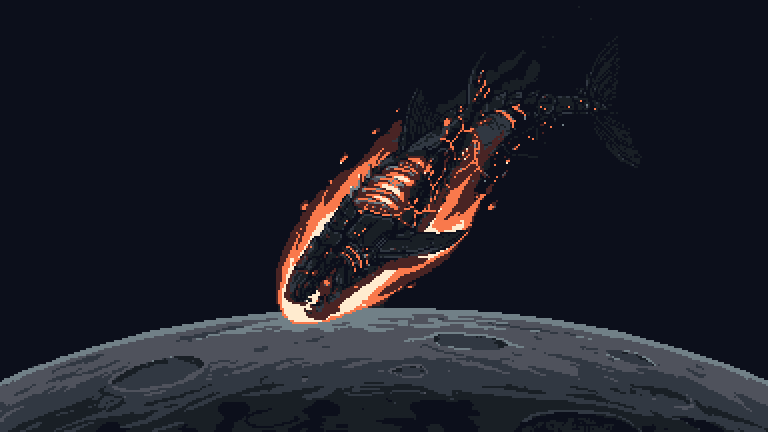
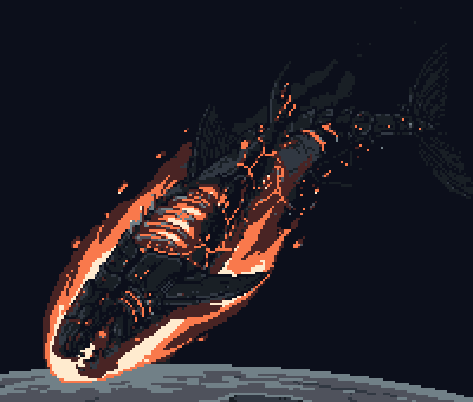
Edição 81
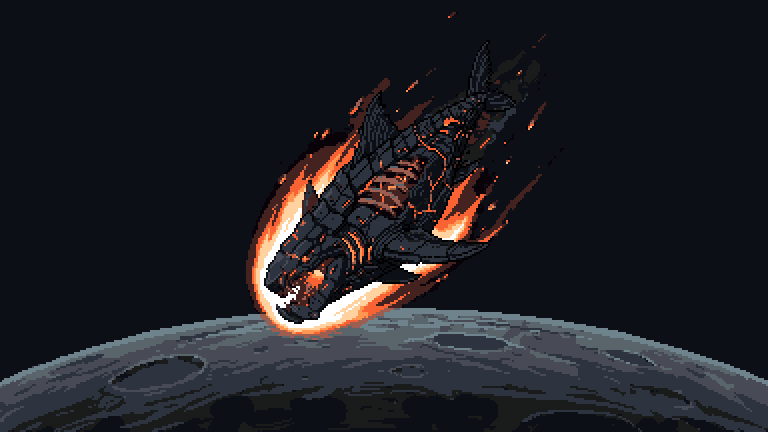
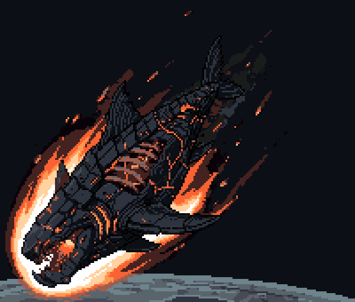
Edição 84
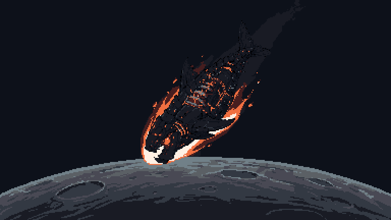
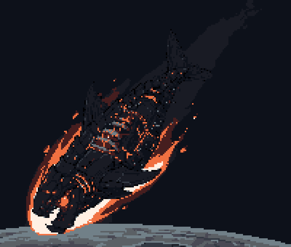
Edição 83
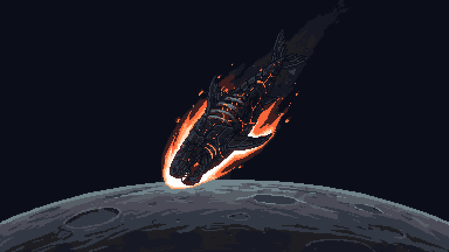
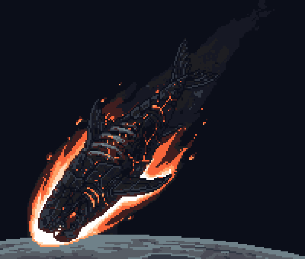
Capítulos 6 e 7 · a carcaça na lua
Capturado no capítulo 6 de verdade (jogo pausado, a pintura trocada, com o filtro da superfície). Depois da escolha, roda a instalação de 24/09: a versão fria do capítulo 7 e a folha da lava que apaga placa por placa, da cauda para a cabeça.
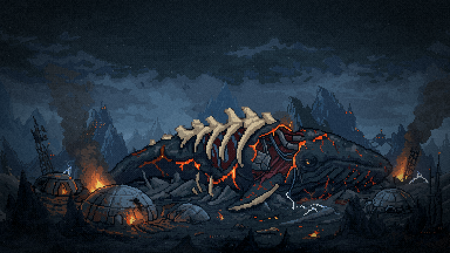
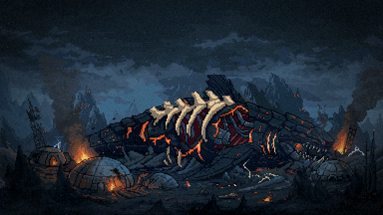
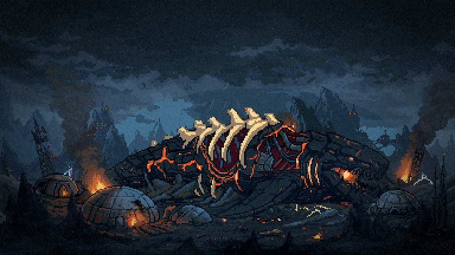
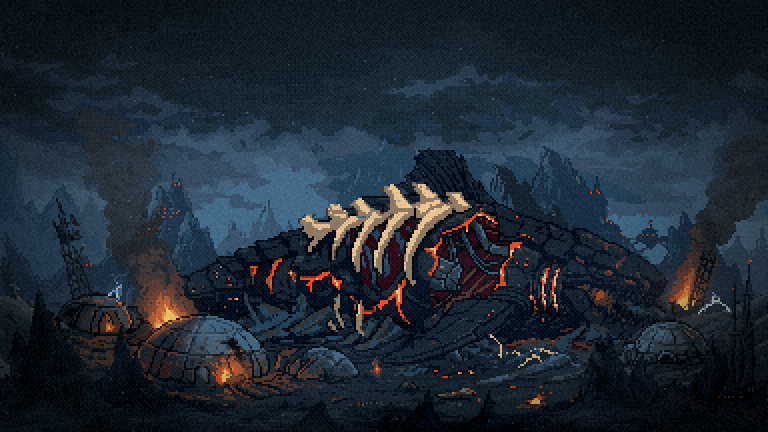
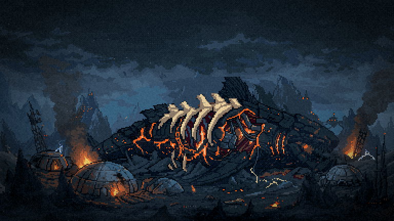
a corrigir Na 81, a ponta da dorsal encosta no topo da elipse e fica achatada. No escolhido, a região se alarga para cima, onde a barbatana passa.
Menu · o armored, vivo
Capturado no menu de verdade, no meio da travessia, a ~70px e com o tint do menu. Ao lado, a mesma arte como a silhueta da F2 perto do chefão. Partir da arte de hoje resolveu o "sumir" que vimos de manhã: as novas mantêm as costelas claras do flanco e aparecem como a de hoje.
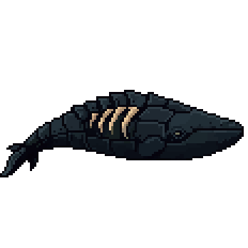
ref-leviata-armored, 116²).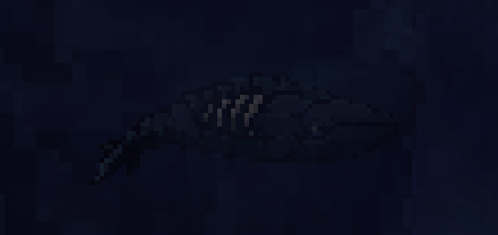
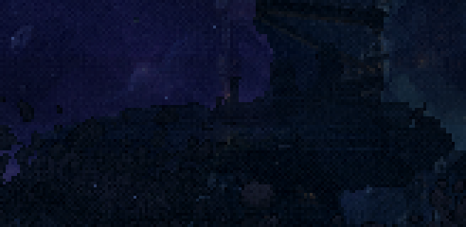
Edição 82 a 1× a minha aposta
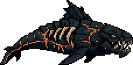
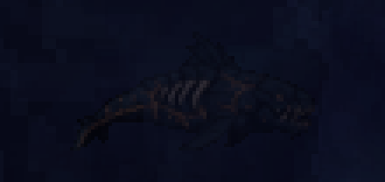
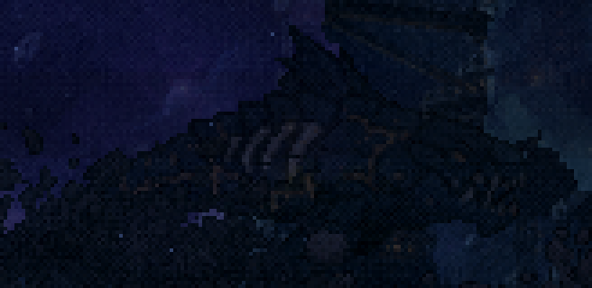
Edição 81 a 1×
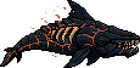
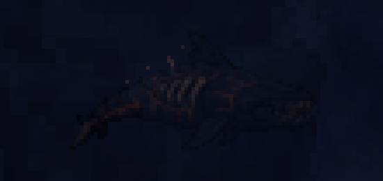
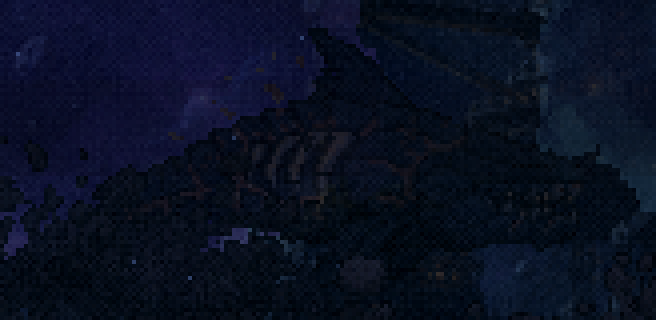
Edições a 2× (reduzidas) não recomendo
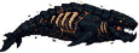
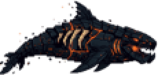
depois O menu é um nado animado (hoje, 17 quadros). O escolhido vira o primeiro quadro, e o nado sai dele no PixelLab (PixMiniMax), com o gesto de tubarão (escorço lateral, não rotação), a paleta corrigida e o GIF no menu. A silhueta da F1/F2/F3 sai do mesmo escolhido, assada no tamanho de tela.
Onde está cada coisa
- As gerações cruas:
cenas/cru/. Na carcaça,*-so-carcaca.pngé a que tem o mundo de hoje em volta. - As ferramentas:
scripts/_leviata/_editar-cena.mjs(as edições),_capturar-cap.mjs(qualquer capítulo da cena final, pausado) e_capturar-corpo.mjs(o menu e a F2). - Nada foi commitado. O capítulo 4 novo já está no jogo (o antigo em
assets/raw/).